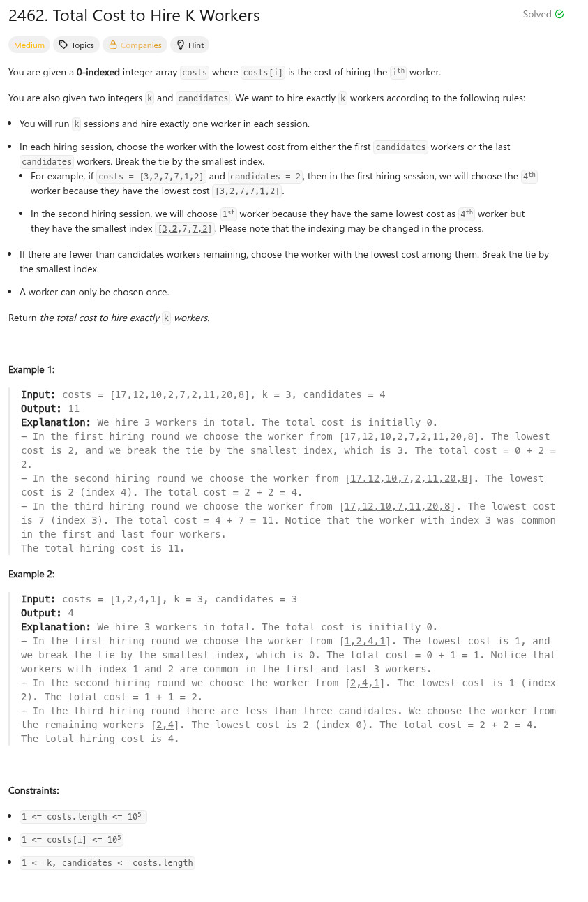

參考資訊：
https://www.cnblogs.com/cnoodle/p/17508179.html
https://www.geeksforgeeks.org/c/c-program-to-implement-priority-queue/
題目：

void sort_node(int *buf, int index)
{
int t = 0;
int left = (index - 1) / 2;
if (index && buf[left] > buf[index]) {
t = buf[left];
buf[left] = buf[index];
buf[index] = t;
sort_node(buf, left);
}
}
void sort_leaf(int *buf, int size, int index)
{
int t = 0;
int s = index;
int left = (2 * index) + 1;
int right = (2 * index) + 2;
if ((left < size) && (buf[left] < buf[s])) {
s = left;
}
if ((right < size) && (buf[right] < buf[s])) {
s = right;
}
if (s != index) {
t = buf[index];
buf[index] = buf[s];
buf[s] = t;
sort_leaf(buf, size, s);
}
}
int sort_queue(const void *a, const void *b)
{
return (*(int *)a) - (*(int *)b);
}
long long totalCost(int *costs, int costsSize, int k, int candidates)
{
long long r = 0;
int cc = 0;
int c0 = 0;
int c1 = 0;
int size[2] = { 0 };
int buf[2][100000] = { 0 };
c0 = 0;
c1 = costsSize - 1;
while (k--) {
while ((size[0] < candidates) && (c0 <= c1)) {
buf[0][size[0]++] = costs[c0++];
sort_node(&buf[0][0], size[0] - 1);
}
while ((size[1] < candidates) && (c0 <= c1)) {
buf[1][size[1]++] = costs[c1--];
sort_node(&buf[1][0], size[1] - 1);
}
int left = (size[0] > 0) ? buf[0][0] : INT_MAX;
int right = (size[1] > 0) ? buf[1][0] : INT_MAX;
if (left <= right) {
r += buf[0][0];
buf[0][0] = buf[0][--size[0]];
sort_leaf(&buf[0][0], size[0], 0);
}
else {
r += buf[1][0];
buf[1][0] = buf[1][--size[1]];
sort_leaf(&buf[1][0], size[1], 0);
}
}
return r;
}